Passage to Spawner Submodel
Liz Stebbins, Ashley Vizek, Erin Cain, Josh Korman
passage_to_spawner_submodel.RmdOverview
The Passage to Spawner (P2S) is a Bayesian model that produces
estimates of spawning adults for Battle Creek,
Clear Creek, Deer Creek, and
Mill Creek with uncertainty. The model can be used to get
spawning adults for a tributary as part of any stock-recruit-based SRJPE
model alternative.
Submodel Objective
The purpose of the P2S submodel is to take in observed upstream
passage, or escapement, estimates from a tributary and model the
relationship with spawner counts, either from redd surveys or holding
surveys. The P2S produces estimated spawner counts with uncertainty for
use in creating the stock portion of a
stock-recruit model in the SRJPE.
The model also estimates a conversion rate, or
proportion of adults that pass though the video counting systems that
become spawning adults (i.e. prespawn mortality). The P2S can also be
used for forecasting; it takes in a standardized environmental covariate
and uses this variable to predict spawners from upstream passage counts.
In this way, the P2S provides resiliency for years where data may be
missing (i.e. years where upstream passage data were collected but
spawner surveys were not conducted).
Conceptual model
P2S estimates adult abundance needed for the stock recruit model. See figure 1 below to see how it fits into the full JPE model system.
Figure 1: Conceptual Diagram of SRJPE model. P2S sub-model
highlighted in yellow

Submodel Architecture
The submodel takes observed data (in orange) and predicts spawner counts (in pink). Parameters estimated by the model are light pink; for more information, see documentation.

Model inputs
The model takes in two datasets:
-
Observed adult counts or estimates from all methods
(upstream passage, holding surveys, redd surveys, and carcass surveys)
aggregated by year and stream. This is in the
SRJPEdata::observed_adult_inputdata object. -
Observed environmental covariates aggregated by
year within streams, and standardized (scaled to center on 0). This is
in the
SRJPEdata::adult_model_covariates_standardobject.
Running the P2S submodel
For a given stream and covariate
The model is run for a given stream and environmental covariate.
- Options for streams are
battle creekandclear creek. - Environmental covariates are
water year type,growing degree days,maximum flow,median passage timing, andpassage index.
# run the model for battle creek and water year type
battle_inputs <- prepare_P2S_inputs("battle creek", "wy_type")
battle_P2S_model <- run_passage_to_spawner_model(battle_inputs)For all covariates within a stream
This truncates the dataset to only those years where all covariate
data is available. You can look at parameters that help diagnose the
performance of the different covariates like R2_data,
R2_fixed, mean_redds_per_spawner, and
b1_survival.
# run the model for battle creek and water year type
battle_covariate_comparison <- compare_P2S_model_covariates("battle creek")
battle_covariate_comparison |>
filter(parameter %in% c("R2_data", "R2_fixed", "mean_redds_per_spawner",
"sigma_redds_per_spawner", "b1_survival",
"spawner_abundance_forecast"))Model Output
The P2S model produces a STANfit object when run. You can extract
parameter estimates from the model object with the function
extract_P2S_estimates(). This produces a table.
battle_parameter_estimates <- extract_P2S_estimates(battle_P2S_model)| parameter | mean | se_mean | sd | 2.5 | 25 | 50 | 75 | 97.5 | n_eff | Rhat | year |
|---|---|---|---|---|---|---|---|---|---|---|---|
| log_mean_redds_per_spawner | -0.7756127 | 0.0009767 | 0.1662082 | -1.1088123 | -0.8826713 | -0.7743096 | -0.6676304 | -0.4474190 | 28957.38 | 1.0001819 | NA |
| sigma_redds_per_spawner | 0.6176322 | 0.0005426 | 0.1185665 | 0.4352698 | 0.5341672 | 0.6007244 | 0.6824753 | 0.8992626 | 47743.00 | 1.0001319 | NA |
| b_survival | 0.2207787 | 0.0029467 | 0.3314244 | -0.4351591 | 0.0046350 | 0.2197987 | 0.4356461 | 0.8865241 | 12650.26 | 1.0004669 | 2001 |
| log_redds_per_spawner | -1.2754301 | 0.0005788 | 0.1728325 | -1.6260166 | -1.3910668 | -1.2711890 | -1.1559771 | -0.9504445 | 89168.74 | 1.0000197 | 2001 |
| log_redds_per_spawner | -1.1327236 | 0.0003877 | 0.1164060 | -1.3684956 | -1.2099801 | -1.1305666 | -1.0535601 | -0.9122176 | 90168.53 | 0.9999576 | 2002 |
| log_redds_per_spawner | -0.5759191 | 0.0029505 | 0.3364033 | -1.2524814 | -0.7937494 | -0.5754964 | -0.3554868 | 0.0866867 | 12999.47 | 1.0004778 | 2003 |
| log_redds_per_spawner | -0.9447890 | 0.0005517 | 0.1621853 | -1.2723532 | -1.0527563 | -0.9414259 | -0.8333916 | -0.6380928 | 86427.66 | 0.9999703 | 2004 |
| log_redds_per_spawner | -0.6980111 | 0.0029671 | 0.3493897 | -1.3982250 | -0.9257723 | -0.6980626 | -0.4669272 | -0.0134806 | 13866.49 | 1.0004266 | 2005 |
| log_redds_per_spawner | -0.8264333 | 0.0029588 | 0.3382511 | -1.5006455 | -1.0461285 | -0.8252512 | -0.6038720 | -0.1573202 | 13068.74 | 1.0004673 | 2006 |
| log_redds_per_spawner | -0.7938967 | 0.0002782 | 0.0860919 | -0.9653668 | -0.8509358 | -0.7926342 | -0.7352431 | -0.6292074 | 95740.56 | 0.9999721 | 2007 |
Extract predicted spawners by year, with uncertainty

We can also see forecasted spawner count for a wet or dry year with
uncertainty by looking at the abundance_forecast
parameters, which use the average upstream passage as a predictor
variable and water year type as the predictive covariate. Deer and Mill
Creek model fits are limited in utility due to a lack of available data,
so the confidence intervals for those tributaries are much greater than
for Battle and Clear Creeks.
Resources
See the Passage
to Spawner Full Model Description for full documentation of
development, testing, and results of the submodel. Codebase for the
analysis in the Full Model Description can be found here.
See adult data report for full documentation on adult
Chinook salmon data collection.